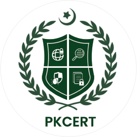

Career
Industry Experience
Key professional roles delivering enterprise security and governance solutions.
Full-Stack Developer (Security Focused)
Higher Education Commission (HEC) / ORIC
Recent
- Designed and developed the ORIC Research & Innovation Portal (ImpactAlign) to streamline the submission and evaluation of research proposals.
- Engineered a secure PostgreSQL database schema with strict Row-Level Security (RLS) policies to protect confidential intellectual property while exposing a curated public view.
- Implemented secure document handling using Supabase Storage with short-lived signed URLs, gating private PDFs behind strict authentication.
- Integrated Google Gemini AI via Supabase Edge Functions with implemented prompt-injection guardrails and migrated sensitive API keys to server-side environments for enhanced security.
Application Security Specialist
Securiti.ai (A Veeam Company)
Jun 2026 — Present
- Executed web/API pentesting on enterprise SaaS platforms, identifying 20+ vulnerabilities (up to Critical) per OWASP standards.
- Exploited access control flaws (IDOR/BOLA) and chained exploits for XSS, SSRF, and CSRF with reproducible PoCs.
- Developed Python tooling for SSRF evasion and automated Burp Suite workflows for streamlined regression testing.
- Key Project: Agentic AI Pentesting Framework — Architected a hierarchical LLM multi-agent system to autonomously map attack surfaces, execute pentests, and surface complex authorization flaws with strict human-in-the-loop guardrails.

GRC Analyst
NCERT (National CERT Pakistan)
Jul 2026 — Present
- Drove GRC initiatives by conducting comprehensive reviews of Information Security Management Systems (ISMS).
- Aligned national cybersecurity policies with enterprise risk standards utilizing the PISF framework.

Security Consultant
The Watch Bazar
Jan 2025 — Present
- Secured financial transactions and customer data for a luxury e-commerce marketplace by identifying and remediating severe database exposures.
🛡️
Independent Security Consultant
Confidential Client (EdTech)
Jan 2025 — Present
- Safeguarded sensitive student academic records for a university by resolving critical logic flaws in their authentication systems.